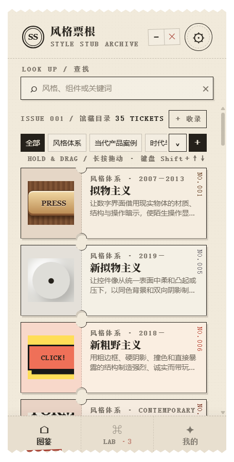
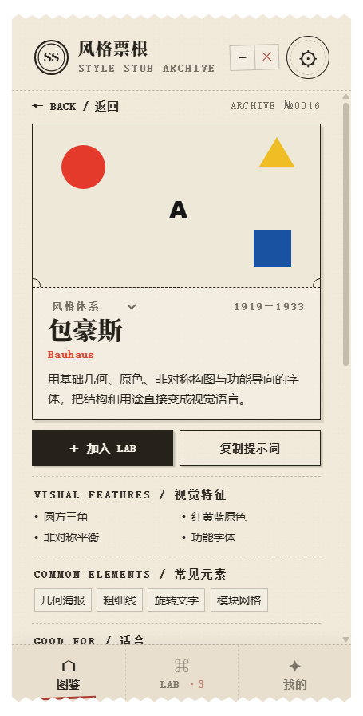
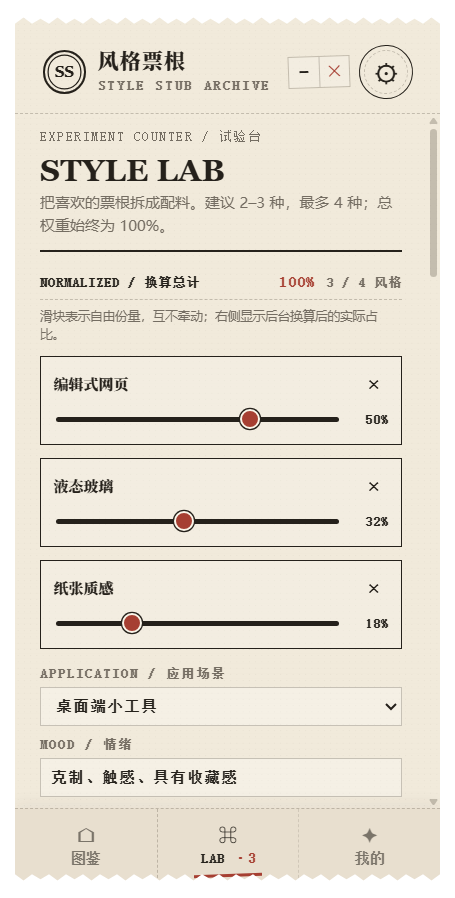
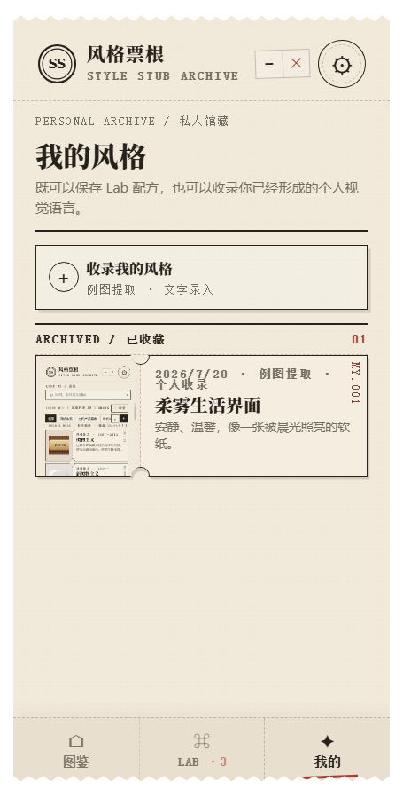
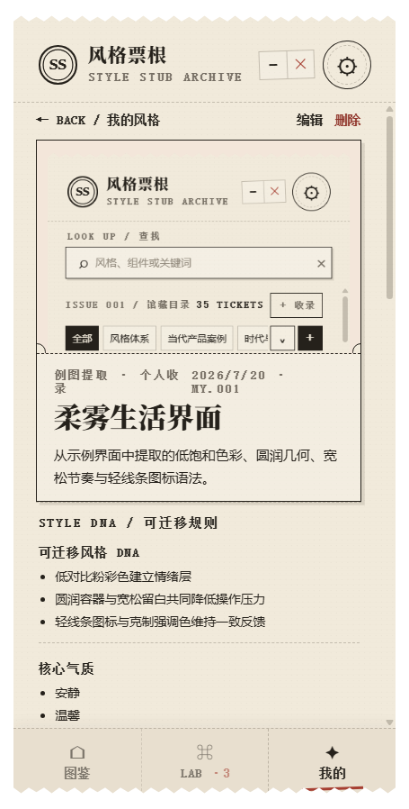

A DESKTOP VISUAL DICTIONARY
35 种视觉风格 · 完整 UI Prompt · 风格实验室 · 个人风格提取

Windows / 本地优先LOOK UP · OPEN · ONE-CLICK COPY

MIX · WEIGHT · GENERATE
决定谁是主风格、谁只贡献材质或情绪，后台自动换算百分比并生成中英文新配方。

液态玻璃 32%1—4 IMAGES → TRANSFERABLE RULES
千问先看图提取证据，再用一次不含图片的文本复审，主动排除产品名、Tab、专属图标和信息架构。


SMALL WINDOW · QUIET PRESENCE